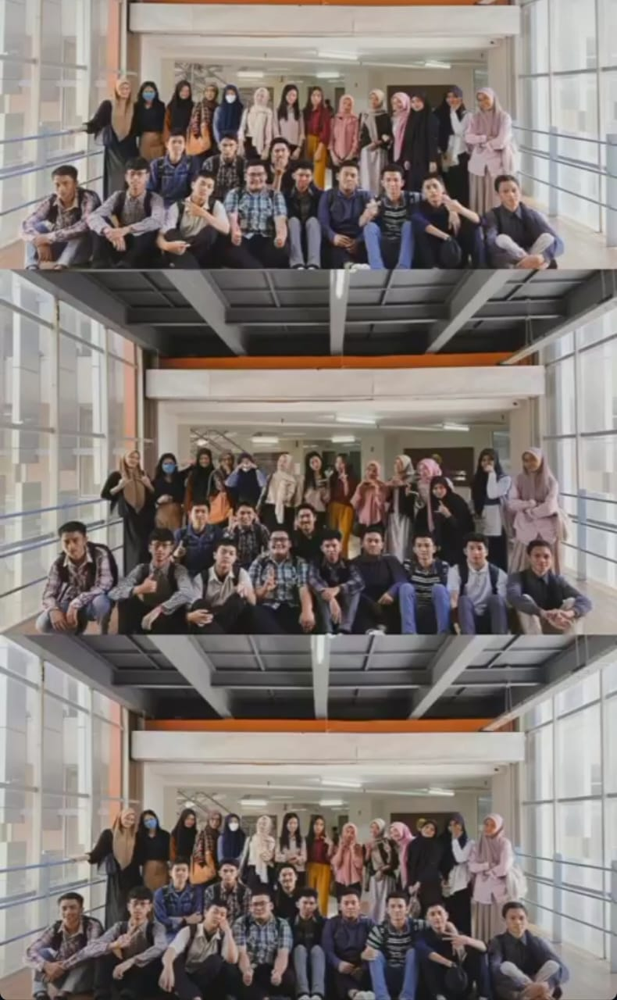

Nama : Abib Toding
NIM : 230209502099
Kelas : PTIK-H
Alamat : jl, Goa ria, rudiang raya
Asal Sekolah SMAN1 polewali
PERKULIAHAN SEMESTER 1 DAN SEMESTER 2 |
|---|
| Saya memulai perjalanan kuliah saya di Universitas Makassar dengan antusiasme yang tinggi, memilih jurusan Pendidikan Teknik Informatika. Hari pertama di kampus terasa penuh semangat dan kegembiraan. Kuliah pertama adalah pengantar untuk jurusan ini, di mana dosen memberikan gambaran umum mengenai materi yang akan dipelajari dan pentingnya integrasi teknologi dalam pendidikan. Saya merasa terinspirasi oleh visi yang mengaitkan teknologi dengan metode pengajaran yang inovatif.
Memasuki semester kedua, saya semakin bersemangat untuk mendalami ilmu yang lebih teknis. Algoritma dan Struktur Data adalah mata kuliah yang sangat menantang namun bermanfaat. Saya belajar berbagai algoritma dan struktur data, seperti linked list dan tree, yang sangat penting dalam pengembangan perangkat lunak. Proyek akhir mata kuliah ini melibatkan pemecahan masalah nyata menggunakan algoritma yang telah dipelajari. Secara keseluruhan, dua semester pertama kuliah di Universitas Makassar memberikan saya landasan yang kuat dalam Pendidikan Teknik Informatika, memadukan aspek teknis dengan metode pengajaran. Saya merasa siap untuk menghadapi tantangan berikutnya dan mengaplikasikan ilmu yang telah saya pelajari. |
Daftar Mata kuliah Yang telah dipelajari :
|
| Daftar Dosen :
|
| Foto :
 |
Daftar 4 teman dekat :
| No | Nama | Jenis Kelamin | Alamat | Asal Sekolah | |
|---|---|---|---|---|---|
| Lengkap | Panggilan | ||||
| 1 | Muh. Fuad | Fuad | Laki-Laki | Enrekang | SMAN 9 Enrekang |
| 2 | Muh. Alief Rezky Anisar | Alif | Laki-laki | Makassar | SMAGA Makassar |
| 3 | Maikel | maikel | Laki-laki | Mamasas | SMAN 1 Mamasa |
| 4 | Muh. Rifki Adryan | Rifki | Laki-laki | Makassar | MAN2 |